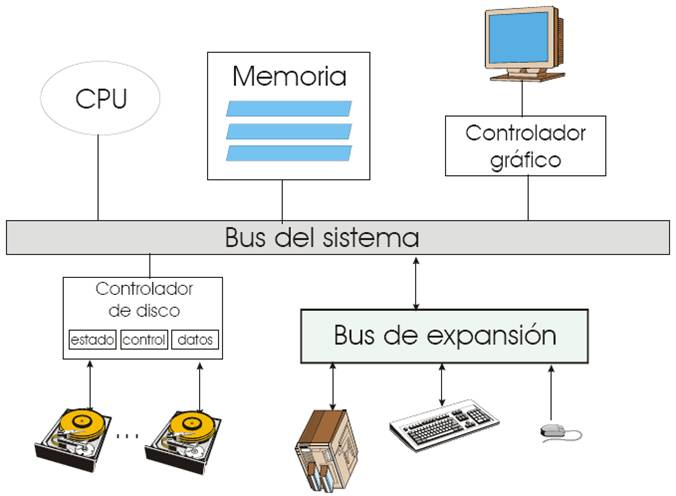
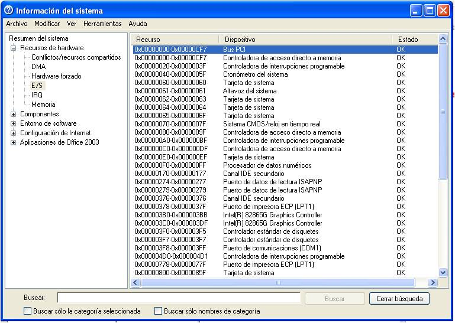
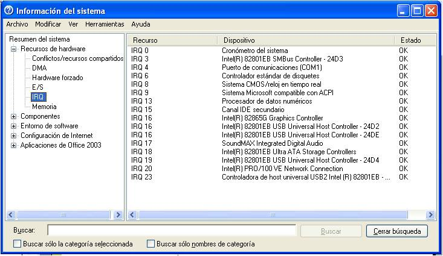
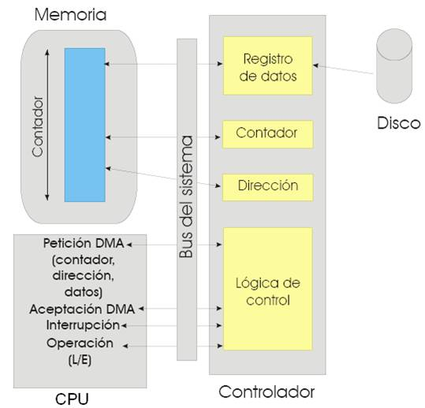
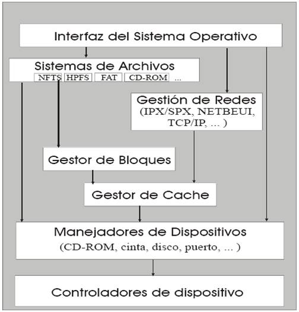

Caracterización de los dispositivos de Entrada/Salida
Arquitectura del sistema de Entrada/Salida
Introducción
El corazón de una computadora lo constituye el CPU.
Sin embargo, no serviría de nada sin:
Dispositivos de almacenamiento secundario (discos) y terciario (cintas, CD, DVD).
Dispositivos periféricos que le permiten interactuar con el usuario.
Clasificación de los dispositivos de E/S
Periféricos
Legibles para el usuario
Permiten la comunicación entre el usuario y la computadora, ya sea de entrada (ratón, teclado, etc.) o salida (pantalla, impresora, etc.).
Dispositivos de almacenamiento
Legibles para la máquina
Proporcionan almacenamiento no volátil de datos para abastecer a los programas que ejecuta el CPU.
Dispositivos de comunicaciones
Permiten conectar a la computadora con otras computadoras a través de una red.
Velocidad de los dispositivos
El CPU procesa instrucciones a mas de 1 GHz y la memoria RAM tiene un tiempo de acceso de nanosegundos.
Los dispositivos de E/S más rápidos tienen una velocidad del orden de los milisegundos.
Esta diferencia en la velocidad de acceso, y el hecho de que las aplicaciones son cada vez más interactivas y necesitan más E/S, hace que los sistemas de E/S sean el cuello de botella más importante de los sistemas. Por ello los SO dedican un gran esfuerzo en desarrollar y optimizar los mecanismos de E/S.
El SO debe controlar el funcionamiento de todos los dispositivos de E/S para alcanzar los siguientes objetivos:
Facilitar el manejo de los dispositivos periféricos. Para ello debe ofrecer una interfaz entre los dispositivos y el resto del sistema que sea sencilla y fácil de utilizar.
Optimizar la E/S del sistema, proporcionando mecanismos de incremento de prestaciones donde sea necesario.
Proporcionar dispositivos virtuales que permitan conectar cualquier tipo de dispositivo físico sin que sea necesario remodelar el sistema de E/S del SO.
Permitir la conexión de dispositivos nuevos de E/S, solventando de forma automática su instalación usando mecanismos del tipo plug&play.
Caracterización de los dispositivos de E/S
Para los programadores, el sistema de E/S es una caja negra que lee y escribe datos en dispositivos externos a través de una funcionalidad bien definida.
Para los fabricantes de dispositivos, un dispositivo es un instrumento muy complejo que incluye cientos de miles de componentes electrónicos o electro-mecánicos.
Los diseñadores de SO se encuentran en un lugar intermedio entre los dos anteriores.
Conexión de dispositivos del sistema de E/S
En el modelo de un periférico se distinguen dos elementos:
Periféricos o dispositivos de E/S
Elementos que se conectan al CPU a través de la unidades de E/S.
Son el componente mecánico que se “conecta” a la computadora.
Controladores de dispositivos o unidades de E/S
Se encargan de hacer la transferencia de información entre la memoria principal y los periféricos.
Son el componente electrónico a través del cual se conecta el dispositivo de E/S.
Conexión de dispositivos a una computadora

Conexión por puerto o memoria
Para iniciar una operación de E/S, el CPU tiene que escribir sobre los registros (datos, control, estado) los datos de la operación a través de una dirección de E/S o de memoria asignada únicamente al controlador.
El modelo de dispositivos por puerto
El modelo proyectado en memoria
El modelo de dispositivos por puerto es clásico de las arquitecturas Intel.
Cuando se instala un dispositivo, a su controlador se le asigna un puerto de E/S, una interrupción de hardware y un vector de interrupción.
En una operación de E/S el CPU la ejecuta operaciones del tipo portin o portout con la dirección del puerto del dispositivo y con parámetros para indicar que puerto se desea manipular.
El problema de este tipo de direccionamiento es que exige conocer las direcciones de E/S y programar las instrucciones especiales de E/S, lo que es significativamente distinto del modelo de memoria.
El modelo proyectado en memoria asigna a cada dispositivo de E/S un rango de direcciones de memoria a través de las cuales se escribe sobre los registros del controlador
No hay instrucciones específicas de E/S, sino que las operaciones se llevan a cabo usando instrucciones máquina del manejo de memoria.
Mapa único de direcciones de memoria
Se reserva una zona de memoria física para asignar las direcciones de E/S.
Direcciones de E/S de algunos controladores en una PC con WinXP

Dispositivos de bloques y caracteres
Dispositivos de bloque:
Acceso a nivel de bloque, el cual puede ser secuencial o aleatorio.
Operaciones: leer, escribir, buscar, …, etc.
E/S directa o a través del servidor de archivos.
Dispositivos de caracter:
Acceso a nivel carácter, el cual también puede ser secuencial o aleatorio.
Existen bibliotecas para optimizar y dar forma a este tipo de accesos (edición de línea).
E/S por interrupciones
El procesador envía la orden de E/S al controlador del dispositivo y no espera, se dedica a otras tareas hasta que le llega una interrupción del dispositivo que indica que se ha realizado la operación solicitada.
El gestor de interrupciones recibe y maneja la interrupción
Rutinas de tratamiento de interrupción
Suelen tener dos partes:
Una genérica y otra particular para el dispositivo
La parte genérica hace:
Capturar la interrupción,
Salvaguardar el estado del procesador,
Activar la rutina de manejo de interrupción,
Indicar al planificador que debe poner “lista” la rutina particular.
Desactivar la interrupción,
Restaurar el estado del procesador,
Cesión de control
La parte correspondiente a lo particular del dispositivo contiene el manejador que el fabricante desarrolló para manipular su dispositivo.
Interrupciones asociadas a algunos controladores en una PC

Mecanismos de incremento de prestaciones

Estructura y componentes

Diagrama de flujo con las operaciones de un manejador